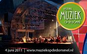

Quadrivium |
|||||||||||
|
|||||||||||
Organisatie |
|||||||||||
|
|||||||||||
Activiteiten |
|||||||||||
|
|||||||||||
voor Leden |
|||||||||||
|
|||||||||||
Contact |
|||||||||||
|
|||||||||||
Muziek op de Dommel 2011
Muzikale activiteit

zaterdag 4 juni 2011: Muziek op de Dommel 2011
Muziek op de Dommel is een gratis toegankelijk festival voor klassieke muziek. Er zijn optredens van verschillende orkesten, koren en ensembles uit de regio op een unieke locatie: een groot drijvend podium op de rivier de Dommel achter het Van Abbe museum. Bezoekers kunnen de hele middag en avond genieten van prachtige klassieke muziek met een Russisch thema. Het festival wordt afgesloten met spetterende optredens van de onderverenigingen van het Eindhovens Studenten Muziek Gezelschap Quadrivium, in samenwerking met professionele solisten.
De doelstelling van het festival is het organiseren van een dag vol spraakmakende concerten. Wij bieden de vele amateurorkesten, -koren en -ensembles die in de regio te vinden zijn de kans om op een unieke locatie te concerteren voor een breed publiek.
Kom op 4 juni naar het festival Muziek op de Dommel, want van muziek kan iedereen genieten!
Voor meer informatie zie www.muziekopdedommel.nl
Gespeelde muziek
Sambuca o.l.v. Maartje van den Boom-Coppes
(Diamond Dogs): Zang
Ensuite o.l.v. Ghislain Bellefroid
Rob Ritzen (Toulouse): zang
Ensuite o.l.v. Ghislain Bellefroid
(Diamond Dogs): Zang
Ensuite o.l.v. Ghislain Bellefroid
Maarten Kat (Zidler): Zang
Marcel Strijbosch (de Hertog): Zang
(Ensemble): Zang
Sambuca o.l.v. Maartje van den Boom-Coppes
Auletes o.l.v. Jos Schroevers
Hadewijch Voorn: Sopraan
Auletes o.l.v. Jos Schroevers
Katerina Tarakanova: Piano
Auletes o.l.v. Jos Schroevers
Auletes o.l.v. Jos Schroevers
Hadewijch Voorn: Sopraan
Auletes o.l.v. Jos Schroevers
- Giroloma Frescobaldi - Canzon Terza
- Giovanni Palestrina - Canzonetta
- Francesco d'Ana - Sonetto
- Annibale Padovano - Madrigal
- Orazio Vecchi - Canzonetta
- Onbekend - Korobushka
- Onbekend - Gorbitschok
- Onbekend - Spie m'lla Djènjèts
- Onbekend - Posadila
- Onbekend - Trioka
- Onbekend - Kalinka
(Diamond Dogs): Zang
Ensuite o.l.v. Ghislain Bellefroid
Rob Ritzen (Toulouse): zang
Ensuite o.l.v. Ghislain Bellefroid
(Diamond Dogs): Zang
Ensuite o.l.v. Ghislain Bellefroid
Maarten Kat (Zidler): Zang
Marcel Strijbosch (de Hertog): Zang
(Ensemble): Zang
Sambuca o.l.v. Maartje van den Boom-Coppes
- Albrecht Rosenstengel - Nutcracker Suite
- Ouverture
- Mars
- Arabische dans
- Chinese dans
- Dans van de suikertante
- Russische dans
- Dans van de fluiten
- Bloemenwals
- S. Rachmaninoff - Bogorodĩtse Dẽvo, raduisya
- S. Sekunda - Dana Dana
- P.I. Tchaikovsky - Tebe Poem
- P.I. Tchaikovsky - Ne Kucushetschka
- D. Schertzer - Verchovino
- A. Borodin - Polovtsian dances
Auletes o.l.v. Jos Schroevers
Hadewijch Voorn: Sopraan
Auletes o.l.v. Jos Schroevers
Katerina Tarakanova: Piano
Auletes o.l.v. Jos Schroevers
Auletes o.l.v. Jos Schroevers
Hadewijch Voorn: Sopraan
Auletes o.l.v. Jos Schroevers
| Onderverenigingen: | Auletes, Ensuite, Sambuca, Vokollage |
|---|